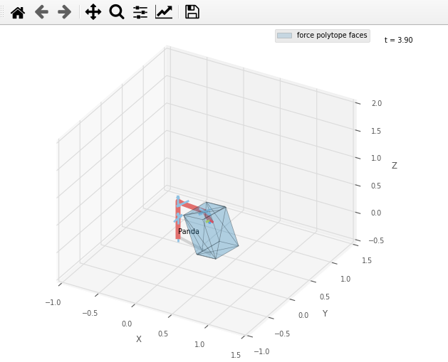
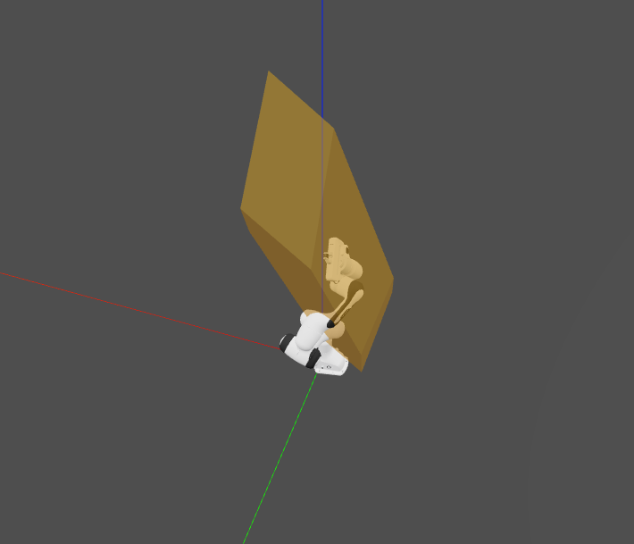
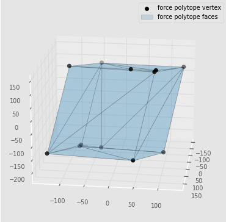

Robotics toolbox examples

Installing robotics toolbox
Robotics toolbox can be easily downloaded as sa pip package or our preferred way using anaconda.
Pip package install
Install the robotics toolbox
pip install roboticstoolbox-python
If you still have not installed pycapacity, you can install it using
pip install pycapacity
Then if you want to use Swift, install the package for dealing with meshes called trimesh
pip install trimesh
Finally the package called networkx for displaying the robot in Swift correctly
pip install networkx
Anaconda install
For anaconda instals you can simply download the yaml file and save it as env.yaml:
name: rtbx_examples
channels:
- conda-forge
dependencies:
- python=3.8
- roboticstoolbox-python
- numpy
- matplotlib
- pip
- pip:
- pycapacity
- trimesh
And create a new ready to go environment:
conda env create -f env.yaml # create the new environemnt and install robotics toolbosx, pycapacity, ...
conda activate rtbx_examples
Creating the custom environment from scratch
You can also simply use anaconda to create a new custom environment:
conda create -n rtbx_examples python=3.8 # create python 3.8 based environment
conda activate rtbx_examples
conda install -c conda-forge roboticstoolbox-python numpy matplotlib
Then install pycapacity for the workspace analysis
pip install pycapacity
📢 NEW Examples!
- For some more examples check out the
examplesfolder of the repository. Interactive jupyter notebooks are available in the
examples/notebooksfolder: see on GithubPython scripts are available in the
examples/scriptsfolder: see on Github
Code example using pyplot
Calculating the force polytope of the panda robot and visualising it using the pyplot.
import roboticstoolbox as rp
import numpy as np
panda = rp.models.DH.Panda()
# initial pose
q= np.array([0.00138894 ,5.98736e-05,-0.30259058, -1.6, -6.64181e-05, 1.56995,-5.1812e-05])
panda.q = q
# joint torque limits
t_max = np.array([87, 87, 87, 87, 20, 20, 20])
t_min = -t_max
# polytope python module
import pycapacity.robot as pyc
# robot matrices
Jac = panda.jacob0(q)[:3,:]
# gravity torque
gravity = panda.gravload(q).reshape((-1,1))
# calculate for the polytope
f_poly = pyc.force_polytope(Jac, t_max, t_min, gravity)
# plotting the polytope using pycapacity
import matplotlib.pyplot as plt
from pycapacity.visual import * # pycapacity visualisation tools
# visualise panda
fig = panda.plot(q)
ax = fig.ax
# draw faces and vertices
plot_polytope(plot=plt,
polytope=f_poly,
label='force polytope',
edge_color='black',
alpha = 0.2,
show_vertices=False,
center=panda.fkine(q).t, # set the polytope center at the end effector position
scale=1/500) # scale the polytope and place it to the end-effector
ax.set_xlim([-1, 1.5])
ax.set_ylim([-1, 1.5])
ax.set_zlim([0, 1.5])
plt.legend()
plt.show()
fig.hold()

📢 NEW Examples!
- For some more examples check out the
examplesfolder of the repository. Interactive jupyter notebooks are available in the
examples/notebooksfolder: see on GithubPython scripts are available in the
examples/scriptsfolder: see on Github
Code example using Swift
Calculating the force polytope of the panda robot and visualising it using the Swift.
import roboticstoolbox as rp
import numpy as np
panda = rp.models.DH.Panda()
# random initial pose
q_min = np.array([-2.7437, -1.7837, -2.9007, -3.0421, -2.8065, 0.5445, -3.0159])
q_max = np.array([2.7437, 1.7837, 2.9007, -0.1518, 2.8065, 4.5169, 3.0159])
q= np.random.uniform(q_min,q_max)
panda.q = q
# joint torque limits
t_max = np.array([87, 87, 87, 87, 20, 20, 20])
t_min = -t_max
# polytope python module
import pycapacity.robot as pyc
# robot matrices
Jac = panda.jacob0(q)[:3,:]
# gravity torque
gravity = panda.gravload(q).reshape((-1,1))
# calculate for the polytope
f_poly = pyc.force_polytope(Jac, t_max, t_min, gravity)
# calculate the face representation of the polytope
f_poly.find_faces()
# visualise panda
panda = rp.models.Panda()
import swift.Swift as Swift
panda.q = q
env = Swift()
env.launch()
env.add(panda)
# polytope visualisation
import trimesh
# save polytope as mesh file
scaling = 500
# create the mesh
mesh = trimesh.Trimesh(vertices=(f_poly.vertices.T/scaling + panda.fkine(q).t),
faces=f_poly.face_indices, use_embree=True, validate=True)
# absolute path to the temporary polytope file saved
# in the stl format
import os
file_path = os.path.join(os.getcwd(),'tmp_polytope_file.stl')
f = open(file_path, "wb")
f.write(trimesh.exchange.stl.export_stl(mesh))
f.close()
# robot visualisation
from spatialgeometry import Mesh
poly_mesh = Mesh(file_path)
poly_mesh.color = (0.9,0.6,0.0,0.5)
env.add(poly_mesh)

📢 NEW Examples!
- For some more examples check out the
examplesfolder of the repository. Interactive jupyter notebooks are available in the
examples/notebooksfolder: see on GithubPython scripts are available in the
examples/scriptsfolder: see on Github
Code example using matplotlib
Calculating the force polytope of the panda robot only polytope using matplotlib
import roboticstoolbox as rp
import numpy as np
panda = rp.models.DH.Panda()
# initial pose
q= np.array([0.00138894 ,5.98736e-05,-0.30259058, -1.6, -6.64181e-05, 1.56995,-5.1812e-05])
panda.q = q
# joint torque limits
t_max = np.array([87, 87, 87, 87, 20, 20, 20])
t_min = -t_max
# polytope python module
import pycapacity.robot as pyc
# robot matrices
Jac = panda.jacob0(q)[:3,:]
# gravity torque
gravity = panda.gravload(q).reshape((-1,1))
# calculate for the polytope
f_poly = pyc.force_polytope(Jac, t_max, t_min, gravity)
# plotting the polytope using pycapacity
import matplotlib.pyplot as plt
from pycapacity.visual import * # pycapacity visualisation tools
fig = plt.figure()
# draw polytope
plot_polytope(plot=plt,
polytope=f_poly,
label='force polytope',
edge_color='black',
alpha = 0.2,)
plt.legend()
plt.show()
